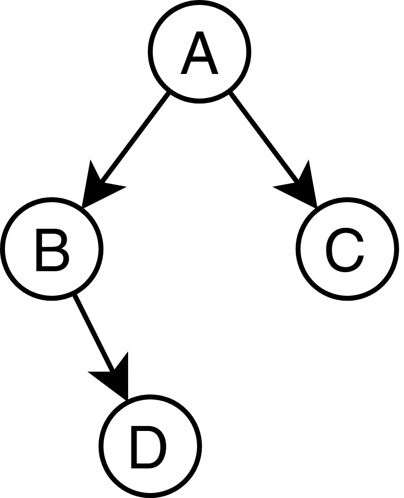
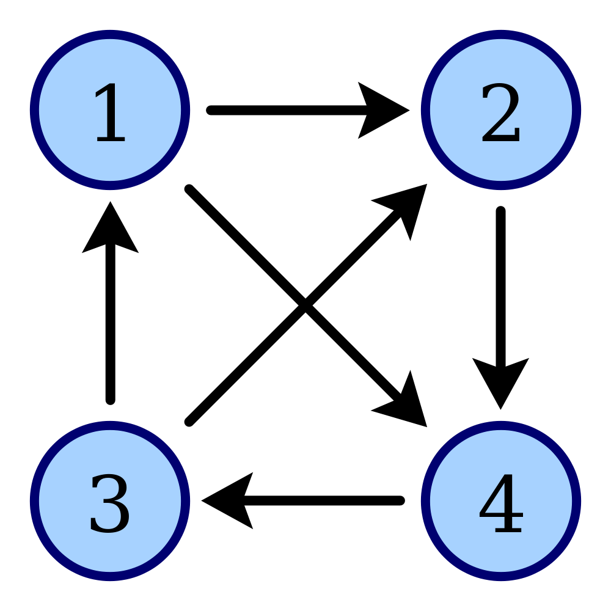

# Estructuras de Datos Avanzadas Presentado por Kevin Peña
## Cola y Pila Son estructuras de datos lineales caracterizadas por el orden que tienen sus elementos en entrar y salir de la estructura. - FIFO (Cola) <!-- .element: class="fragment" data-fragment-index="1" --> - LIFO (Pila) <!-- .element: class="fragment" data-fragment-index="2" -->
Cola
Su nombre es una analogía a una cola o fila en la vida real.
Es First In First Out (El primero en entrar es el primero en salir).
Ejemplo
Agregar
Cola
Tareas Finalizadas
## Tamaño ```cpp // Recordemos struct Persona { array<char, 10> nombre; int edad; }; ```
## Tamaño (gráficamente) 
Tamaño (demostración)
## Acceso ```cpp cout << kevin.edad << '\n'; cout << kevin.nombre.data() << '\n'; ```
## Uso - Agrupar datos relacionados. - Expresar en el codigo terminología del dominio del problema. - struct es equivalente a class en C++.
## Uso (según el PDF del módulo) ### Estructuras anidadas. ```cpp struct Ubicacion { string pais; string ciudad; string direccion; }; struct Persona { string nombre; int edad; Ubicacion vivienda; Ubicacion trabajo; }; ```
### Arreglos de estructuras ```cpp array<Persona, 4> familia; ```
### Arreglos como miembros de una struct ```cpp struct Persona { array<char, 10> nombre; int edad; }; ```
## Tipos de Estructras de Datos - Arreglos - Matrices (Arreglo de arreglos) - Listas - Pilas - Colas - Arboles - Grafos
### Arreglos - Conjunto de elementos - Contiguos en memoria - Tamaño predefinido ```cpp array<string, 2> nombres {"Kevin", "Andres"}; for (auto& nombre : nombres) cout << "Hola " << nombre << "!\n"; ``` Salida del programa ``` Hola Kevin! Hola Andres! ```
### Matrices ```cpp array<array<double, 3>, 2> notas {{ {4.9, 4.8, 5.0}, {4.8, 4.7, 4.9}, }}; for (int i = 0; i < notas.size(); ++i) { cout << "Notas del estudiante " << i + 1 << ": "; for (auto& nota : notas[i]) cout << nota << " "; cout << '\n'; } ``` Salida del programa ```sh Notas del estudiante 1: 4.9 4.8 5 Notas del estudiante 2: 4.8 4.7 4.9 ```
```cpp struct Estudiante { string nombre; array<double, 3> notas; }; array<Estudiante, 2> estudiantes {{ {"Kevin", {4.9, 4.8, 5.0}}, {"Andres", {4.8, 4.7, 4.9}}, }}; for (auto& est : estudiantes) { cout << "Notas de " << est.nombre << ": "; for (auto& nota : est.notas) cout << nota << " "; cout << '\n'; } ``` Salida del programa ```sh Notas de Kevin: 4.9 4.8 5 Notas de Andres: 4.8 4.7 4.9 ```
### Listas (segun Java) En C++ el equivalente son los requerimientos para [SequenceContainer](https://en.cppreference.com/w/cpp/named_req/SequenceContainer) ```cpp vector<string> nombres; nombres.push_back("Kevin"); nombres.push_back("Andres"); for (auto& nombre : nombres) cout << "Hola " << nombre << "!\n"; ``` Salida del programa ```sh Hola Kevin! Hola Andres! ```
### Pilas ```cpp // Reversar un string stack<char, vector<char>> caracteres; caracteres.push('a'); caracteres.push('m'); caracteres.push('o'); caracteres.push('r'); while(!caracteres.empty()) { cout << caracteres.top(); caracteres.pop(); } ``` Salida del programa ```sh roma ```
### Colas ```cpp queue<string, list<string>> personas; personas.push("Andres"); personas.push("Blanca"); personas.push("Carolina"); while(!personas.empty()) { cout << personas.front() << '\n'; // Atender a la persona personas.pop(); } ``` Salida del programa ```sh Andres Blanca Carolina ```
Arboles
```cpp // Arbol binario (no ordenado) template<typename T> struct Nodo { T datos; Nodo* izquierdo = nullptr; Nodo* derecho = nullptr; }; using NodoJ = Nodo<string>; NodoJ jefe {"Andres"}; NodoJ sub1 {"Blanca"}; jefe.izquierdo = &sub1; NodoJ sub2 {"Carolina"}; jefe.derecho = &sub2; NodoJ subsub {"David"}; sub1.derecho = ⫕ ```

Grafos
```cpp template <typename T> struct Nodo { T data; vector<Nodo*> aristas; void conectar(Nodo* otro) { aristas.push_back(otro); } }; Nodo<int> n1{1}, n2{2}, n3{3}, n4{4}; n1.conectar(&n2); n1.conectar(&n4); n2.conectar(&n4); n3.conectar(&n1); n3.conectar(&n2); n4.conectar(&n3); ```

Punteros
Un numero
que ha de ser interpretado como una dirección de memoria.
Tiene asociado un tipo.
Punteros (lenguajes)
Lenguajes que los usan
Lenguajes que no los usan
C
C#
C++
Java
Objective C
Javascript
Go
Python
Julia
Haskell
Rust
Lua
D
Visual Basic
Pascal
## Punteros (C vs C++) Pasar un array en C ```c int suma_c(int *arr, int size); // al llamarlo int mi_array[] = {1, 2, 3}; suma_c(mi_array, 5); // ups, segfault suma_c(mi_array, sizeof(mi_array) / sizeof(mi_array[0])); // largo ``` Pasar un array en C++ ```cpp template<int N> int suma(const array<int, N>& arr); // al llamarlo array<int> mi_array {1, 2, 3}; suma(mi_array); // no hay forma de pasar el tamaño incorrecto ```
## Punteros (C vs C++) Memoria dinámica ```c int tamano = 10; // asume que viene del usuario int* mi_array = (int*) malloc(tamano * sizeof(int)); // usar mi_array free(mi_array); // no lo olvides o vas a fugar memoria ``` Memoria dinámica en C++ ```cpp int tamano = 10; // asume que viene del usuario vector<int> mi_vec(tamano); // reserva 10 pero puede crecer // usar mi_vec ```